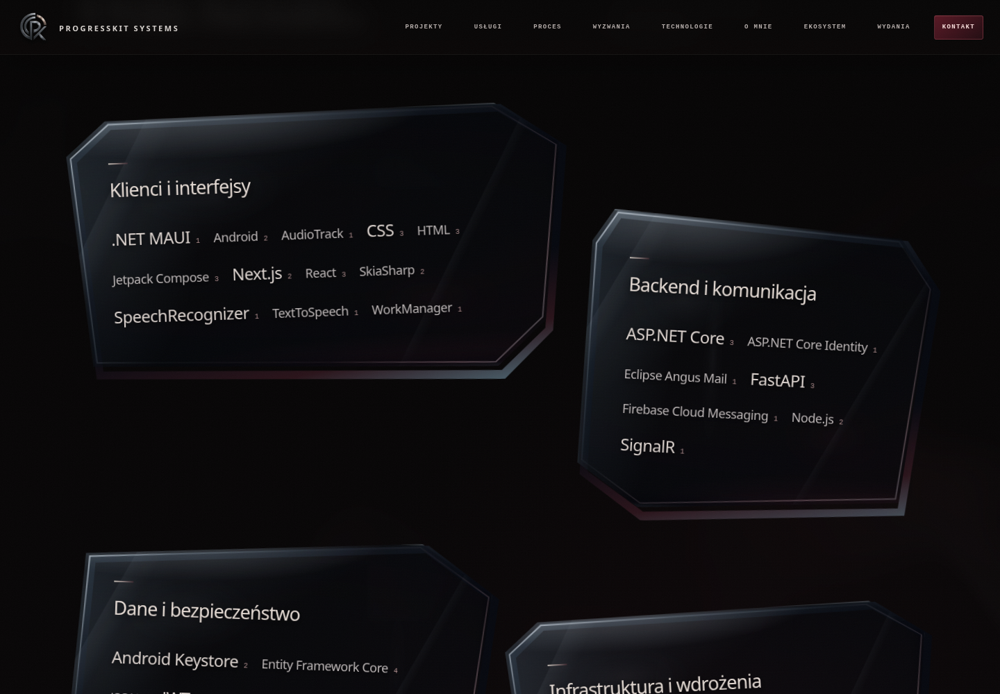
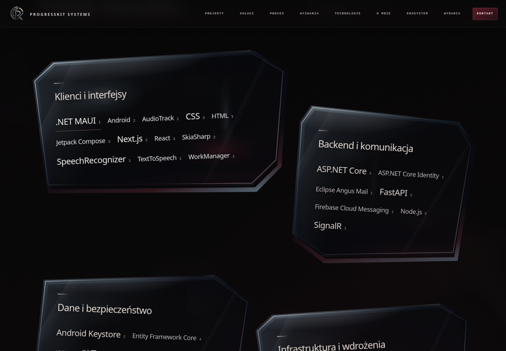
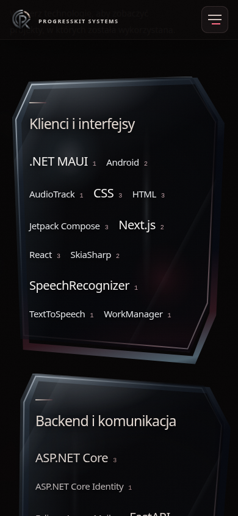

LOKALNY VISUAL REVIEW · OWNERVISUALAPPROVAL OPEN
Warsztat — grubość szkła i energia pod powierzchnią
Wyłącznie polish materiału. Układ, treści, wszystkie 110 nazw i linków filtrujących pozostają zachowane. Odśwież główny podgląd, aby wczytać aktualne pliki JS/CSS.

Idle — oszlifowany bok, wypukły front, drugie odbicie.

Hover — światło pod powierzchnią, zachowana ciemna masa szkła.

Mobile — tap w taflę aktywuje światło; linki nadal filtrują natywnie. Emulacja, nie test fizycznego telefonu.
Desktop — rzeczywiste nagranie przeglądarki, 13 s.
Mobile — rzeczywiste nagranie emulacji, 13 s.
Bez commita, pushu i publikacji. Ocena estetyki pozostaje otwarta dla właściciela.